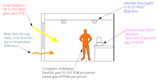

INSULATION
- Insulation control heat flow from outside to inside and inside to outside to keep indoor thermal balance.
- Opaque surfaces has to contain insulation these are walls, ceilings, roof, basement because surface temperature has to be conserved.
- Some of these insulations works for thermal, vapor, fire/smoke, sound resistance.
- Thermal resistance: conduction (transfer thermal momentum between molecules according), convection, radiation(light radiates different amount of electro-magnetic energy
than surfaces absorb that energy) Thermal resistance relates with R which is R=1/U so smaller U factor means better insulation. To obtain effective insulation, decrease U and k (thermal conductivity) and insulation has to cover all surfaces of room from exterior to prevent thermal bridge by structural elements.

THERMAL MASS
Thermal mass works about resistance against heat fluctuation and storing huge amount of energy comes from solar radiation or convection but it does not mean that if material has high thermal mass means it is good insulator. Being good insulator means preventing the heat flow. Traditional wall materials have high mass for example stone, cement, concrete, mud. In current times, designers organize thermal mass for nighttime cooling for winter. Thermal mass is related with mass density, specific heat capacity and thermal conductivity. To explain more of heat capacity, is a method to calculate store energy of material per unit mass.
{kind=link}
Building thermal mass strategy should be positioned as exterior insulation to slow the heat fluctuation better of indoor spaces. If a building has no any exterior insulation, it is open to solar exposing the surface and it decreases interior temperature swing it is bad for indoor heat balance. Finally, the higher thermal mass the lower heating energy usage.
{kind=link}
INTERNAL GAINS
The most commonly internal gain produced by people, lightning(watt/squaremeter), motors, appliances (electrical and cooking devices), small equipment. To calculate it is better divide internal gain into two categorization which are latent (increases temperature changes phase) + sensible (increases temperature no phase changing ) and conductive(suddenly effects the area) + radiative(first absorption after re-radiation with time-lag) Internal gains is advantage for winter but disadvantage for summer time. It is different internal gain properties for different functions about hotel, office, residence or school.
{kind=link}

To computing internal gains there are two different method. First, PMV(the predicted mean vote) which is thermal comfort scale and comfort zone defines between -0.5 and 0.5. Second one is PPD(the predicted percent dissatisfied) that predicts the percentage of dissatisfied occupant at interior space and comfort zone defines between 5% and 10%.
{kind=link}
DAYLIGHTNING
Natural daylight is environmentally friendly, cost efficient (but high investment cost) about energy need physical building thermal properties. It can collect directly from openings or reflecting from surface. It is important the design well, unless it can be disadvantages for system. Atrium, side opening, top opening for daylightning are the methods for illuminate the interior.
To get efficient homogenous illuminance at interior space:
- calculation of sky angle (sky angle = 90 degree - arctan(obstacle / opening height) - arctan(obstacle height/distance))
- calculation interior illuminance (daylight autonomy or useful daylight of illuminance)
- calculation of opening properties (window to wall ratio / orientation of building / glazing type / opening height / shading properties)
Illuminance
UDI (Useful daylight illuminance): UDI is a reinterpretation of Daylight Autonomy. It is hourly based calculation of illumination ranges, 0-100 lux, 100-2000 lux, and over 2000 lux and the metric calculates percentage of illumination.
Opening Properties
South and North is good for opening and applying shading but it is hard to control east and west façades because of the daily route of sun. Height of opening is related with building depth to illuminate room for homogeneously. Shadings type basically, is horizontal for north and south but vertical for east and west façades.
Artificial Lightning
Artificial lightning should be positioned according to regions of room by function or distance from openings. System will support natural lightning the places that sunlight can not reach.
{kind=link}
INFILTRATION
It is basically air leakage from outside to inside by openings. It is caused by temperature differences, air pressure these are wind, stack effect or HVAC manipulation. Infiltration rate is volumetric flow from outside to inside per minute. It can increase heating load unless take precaution. Stack effect is important for buildings to organize air filtration, natural ventilation and heat transfer.
There is three method to calculate by EnergyPlus simulation:
- Flow Rate Model (input data: infiltration schedule/ ACH = 1.0 / air changes per hour / flow rate coefficient )
- Leakage Model (input data: infiltration schedule/ ACH = 0.5 / stack coefficient / wind coefficient )
- Flow Coefficient Model (input data: infiltration schedule/ flow coefficient / stack coefficient / wind coefficient / pressure exponent / shelter factor)
Links :
- https://sustainabilityworkshop.autodesk.com/buildings/thermal-mass
- http://bigladdersoftware.com/
- https://www.ashrae.org/resources--publications/bookstore/handbook-online
- http://www.arca53.dsl.pipex.com/index_files/ac1.htm
- http://comfort.cbe.berkeley.edu/compare
- img/Seven_Point_Scale_600.jpg
- http://www.gsd.harvard.edu/
- http://patternguide.advancedbuildings.net/using-this-guide/analysis-methods/useful-daylight-illuminance